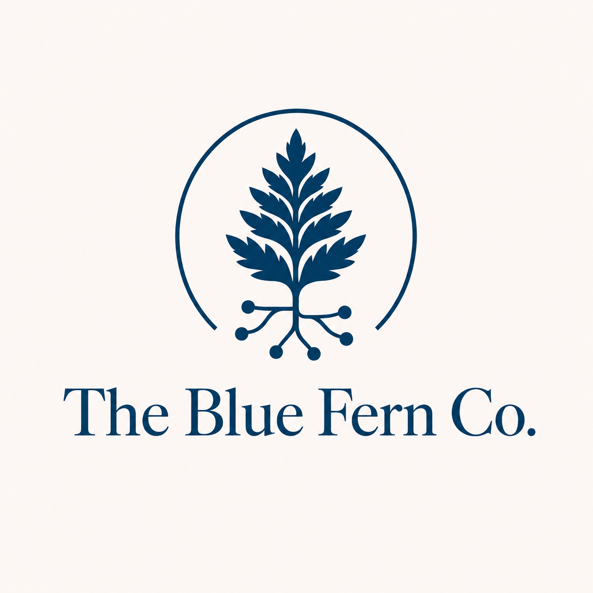

<style>
:root {
  --ink: #1E3F4F;
  --navy: #1E3F4F;
  --blue-fern: #4E6B79;
  --soft-blue: #EFE7DA;
  --fern-green: #4E6B79;
  --paper: #FBF7EF;
  --border: #D2C5B4;
  --panel: #FFFDF8;
  --muted: #4E6B79;
}
.food-line-shell {
  display: grid;
  gap: 1.25rem;
}
.food-line-hero {
  display: grid;
  justify-items: center;
  gap: 0.65rem;
  text-align: center;
  padding-bottom: 1.1rem;
  border-bottom: 1px solid var(--border);
}
.food-line-hero .eyebrow,
.food-line-hero p {
  margin: 0;
}
.food-line-logo {
  display: block;
  height: auto;
  max-width: 90vw;
  object-fit: contain;
  margin: 0 auto;
}
.food-line-logo--home {
  width: min(360px, 90vw);
}
.food-line-logo--edition {
  width: min(460px, 90vw);
}
.food-line-logo--map {
  width: min(520px, 90vw);
}
.food-line-logo--audio {
  width: min(360px, 90vw);
}
.food-line-panel {
  border: 1px solid var(--border);
  border-radius: 18px;
  background: var(--panel);
  padding: clamp(18px, 3vw, 28px);
  box-shadow: 0 18px 42px rgba(30, 63, 79, 0.08);
}
.food-line-panel h2:first-child,
.food-line-panel h3:first-child {
  margin-top: 0;
}
.food-line-actions {
  display: flex;
  flex-wrap: wrap;
  gap: 0.55rem;
  margin-top: 1rem;
}
.food-line-actions a {
  border: 1px solid var(--border);
  border-radius: 999px;
  padding: 0.45rem 0.75rem;
  background: #F3EBDD;
  font-weight: 700;
  text-decoration: none;
}
.food-line-briefing-meta,
.food-line-note,
.food-line-edition-meta {
  color: var(--muted);
  font-size: 0.95rem;
}
.food-line-note {
  border-left: 4px solid var(--fern-green);
  margin: 0.9rem 0 1rem;
  padding: 0.7rem 0 0.7rem 0.9rem;
  background: #F6F0E6;
}
.food-line-story-list,
.food-line-recent-list {
  display: grid;
  gap: 0.85rem;
  list-style: none;
  margin: 1rem 0 0;
  padding: 0;
}
.food-line-story-list li,
.food-line-recent-list li {
  border-top: 1px solid var(--border);
  padding-top: 0.85rem;
}
.food-line-story-list li:first-child,
.food-line-recent-list li:first-child {
  border-top: 0;
  padding-top: 0;
}
.food-line-story-list a,
.food-line-recent-title {
  font-weight: 700;
}
.food-line-recent-title {
  display: block;
  margin-top: 0.15rem;
}
.food-line-open-archive {
  margin-top: 1rem;
}
.food-line-source-table {
  width: 100%;
  border-collapse: collapse;
  font-size: 0.95rem;
}
.food-line-source-table th,
.food-line-source-table td {
  border-top: 1px solid var(--border);
  vertical-align: top;
  padding: 0.65rem 0.55rem;
}
.food-line-source-table th {
  text-align: left;
  color: var(--navy);
  background: #F3EBDD;
  position: sticky;
  top: 0;
}
.food-line-source-table td:nth-child(9),
.food-line-source-table td:nth-child(14) {
  min-width: 16rem;
}
.food-line-source-table td:nth-child(10),
.food-line-source-table td:nth-child(17) {
  min-width: 10rem;
}
.food-line-map-shell {
  display: grid;
  gap: 1rem;
}
.food-line-map {
  height: min(70vh, 640px);
  border: 1px solid var(--border);
  border-radius: 18px;
  overflow: hidden;
}
.food-line-map-panel {
  border: 1px solid var(--border);
  border-radius: 18px;
  background: var(--panel);
  padding: 1rem 1.1rem;
}
.food-line-map-panel ul {
  margin-top: 0.8rem;
}
.food-line-map-panel .fl-legend {
  display: grid;
  grid-template-columns: repeat(auto-fit, minmax(220px, 1fr));
  gap: 0.5rem 1rem;
  list-style: none;
  margin: 0;
  padding: 0;
}
.food-line-map-panel .fl-legend li {
  display: flex;
  align-items: center;
  gap: 0.55rem;
}
.food-line-dot {
  width: 0.8rem;
  height: 0.8rem;
  border-radius: 50%;
  border: 1px solid #1B2F39;
  display: inline-block;
}
.food-line-map-popup {
  display: grid;
  gap: 0.3rem;
  max-width: 24rem;
}
.food-line-map-popup a {
  word-break: break-word;
}
.food-line-audio-shell {
  display: grid;
  gap: 1rem;
}
.food-line-audio-list {
  display: grid;
  gap: 0.8rem;
  list-style: none;
  padding: 0;
  margin: 0;
}
.food-line-audio-list li {
  border-top: 1px solid var(--border);
  padding-top: 0.8rem;
}
.food-line-audio-list li:first-child {
  border-top: 0;
  padding-top: 0;
}
.food-line-source-card {
  border: 1px solid var(--border);
  border-radius: 16px;
  padding: 1rem 1rem 0.9rem;
  background: #FFFDF9;
  box-shadow: 0 10px 24px rgba(30, 63, 79, 0.06);
}
.food-line-source-card h3 {
  margin-top: 0;
}
.food-line-source-card p {
  margin: 0.35rem 0;
}
@media (max-width: 640px) {
  .food-line-logo--edition,
  .food-line-logo--map,
  .food-line-logo--audio,
  .food-line-logo--home {
    width: 90vw;
  }
  .food-line-source-table {
    font-size: 0.9rem;
  }
}
</style>
  <header class="site-header">
    <a class="brand" href="../../index.html">Food Line Dispatch</a>
    <nav><a href="/">Dispatches Home</a><a href="/food-line/">Food Line Dispatch</a><a href="../../archive.html">Archive</a><a href="../../rss.xml">RSS</a></nav>
  </header>
<main class="container briefing food-line-shell">
  <section class="hero food-line-hero">
    
    <p class="eyebrow">September 30, 2026</p>
    <h1>Food Line Claim Ledger</h1>
    <p>What exactly did each public Food Line source support?</p>
  </section>
  <section class="food-line-panel">
    <p>This ledger records 2 public claims supported by source-backed Food Line signals for September 30, 2026.</p><p>Records reviewed: 2. Public claims: 2. Excluded records: 0.</p>
    <table class="food-line-source-table">
      <tr>
        <th>Claim</th><th>Interpretation / why it matters</th><th>Supporting source</th><th>Publisher</th><th>Source URL</th><th>Published date</th><th>Retrieved date</th><th>Evidence level</th><th>Confidence</th><th>Freshness role</th><th>Location scope</th><th>Limitation</th>
      </tr>
      <tr><td>Feed My People Food Bank ended its Hope Lutheran Church partnership in Ladysmith on Sept. 30 and shifted local service back to twice-monthly pop-up distributions.</td><td>This indicates national policy pressure around SNAP eligibility and food assistance access.</td><td>Change in store again for local food bank users</td><td>ladysmithnews.com</td><td><a href="https://www.ladysmithnews.com/news/article_f5a62721-5b3d-4da6-962a-0568a2ee42ab.html" target="_blank" rel="noopener noreferrer">https://www.ladysmithnews.com/news/article_f5a62721-5b3d-4da6-962a-0568a2ee42ab.html</a></td><td>2026-09-30</td><td>2026-10-01T01:25:54.695525+00:00</td><td>background context</td><td>low</td><td>current</td><td>local</td><td>Review wording must remain limited to the traceable supporting evidence.</td></tr><tr><td>The University of South Carolina opened its first Feed the Flock location as a student food-insecurity response.</td><td>This is a national policy-pressure signal related to food assistance access.</td><td>USC&#x27;s Feed the Flock opens its doors</td><td>WCIV</td><td><a href="https://wach.com/news/local/uscs-feed-the-flock-opens-its-doors" target="_blank" rel="noopener noreferrer">https://wach.com/news/local/uscs-feed-the-flock-opens-its-doors</a></td><td>2026-09-30</td><td>2026-10-01T01:25:51.798951+00:00</td><td>news report</td><td>moderate</td><td>current</td><td>local</td><td>Review wording must remain limited to the traceable supporting evidence.</td></tr>
    </table>
    <h2>Diagnostics</h2>
    <ul>
      <li>Records reviewed: 2</li><li>Qualified current records: 2</li><li>Excluded stale: 0</li><li>Excluded duplicate: 0</li><li>Excluded resource-only / no pressure signal: 0</li><li>Excluded weak pressure signal: 0</li><li>Excluded insufficient source traceability: 0</li>
    </ul>
    <p><a href="./source_table.html">Open the public source table</a></p>
    <p><a href="./">Return to the edition</a></p>
  </section>
</main>
  <footer class="site-footer">
    <div class="publisher">
      <a href="https://thebluefernco.com/" target="_blank" rel="noopener noreferrer"></a>
      <p class="publisher-label">Published by <a href="https://thebluefernco.com/" target="_blank" rel="noopener noreferrer">The Blue Fern Company</a></p>
    </div>
  </footer>